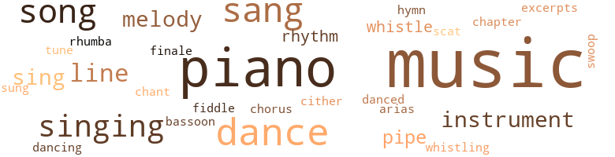
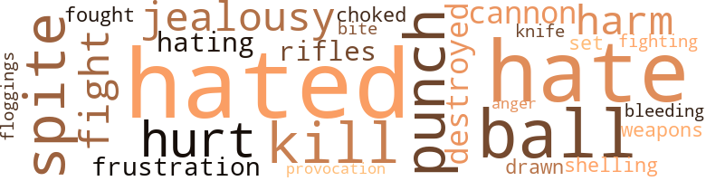
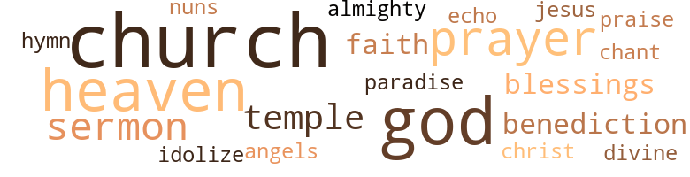

Veronica, by Syndor, W. Leon (1956)
164 music-related terms matched in this text.
Most frequent terms in this topic: music (50); piano (30); sang (11); dance (9); song (8)
aria.n.01
Definition: an elaborate song for solo voice
| word | sentence |
|---|---|
| arias | The radio now presented an opera , arias from Madame Butterfly . |
bassoon.n.01
Definition: a double-reed instrument; the tenor of the oboe family
| word | sentence |
|---|---|
| bassoon | From the street , sounds of drum , trumpet , bassoon , flute , and piano could be heard . |
chant.n.01
Definition: a repetitive song in which as many syllables as necessary are assigned to a single tone
| word | sentence |
|---|---|
| chant | The girl at the organ was playing a soft chant . |
chapter.n.01
Definition: a subdivision of a written work; usually numbered and titled
| word | sentence |
|---|---|
| chapter | A fitting climax , she thought , for the close of her first chapter in Europe . |
chorus.n.01
Definition: any utterance produced simultaneously by a group
| word | sentence |
|---|---|
| chorus | Their chorus filled the air about them . |
dance.n.01
Definition: an artistic form of nonverbal communication
| word | sentence |
|---|---|
| dance | Now the dance was drawing to a close . |
| dance | The floor became more and more crowded as couples rose to take advantage of the last of the dance . |
| dance | At last the dance stopped . |
| dance | Young ladies in wraps , in an effort to get in on the last of the dance , returned from the checkroom with their escorts to glide once more across the floor , bags dangling at their sides . |
| dance | " I wondered if you 'd like to go to a dance . " |
| dances | At dances , double dates and parties she had always tried to be alone with Ralph , but with no success . |
| dances | There would be turkey to eat plus all of the other Thanksgiving festivities , such as football games and dances . |
| dances | There would be bike rides , dances , hikes , and the like . |
| dance | The dance was now over and everybody was leaving . |
| dances | She dances lightly as a feather , Ralph thought . |
| dance | There was a dance in the auditorium . |
| dance | Why do n't we go to a dance tonight instead of the usual bridge party ? " |
| dance | " I 'm not rushing anybody , but if we 're to get there before the dance ends , we 'd better go . " |
dance.v.03
Definition: skip, leap, or move up and down or sideways
| word | sentence |
|---|---|
| dancing | Four couples were dancing to a rhumba . |
| danced | A tree outside the window cast picturesque patterns on the wall as its branches danced to and fro , its foliage waving merrily in the breeze . |
excerpt.n.01
Definition: a passage selected from a larger work
| word | sentence |
|---|---|
| excerpts | As she sat at the piano , her music before her , playing excerpts from her first number , she felt calm and relaxed . |
finale.n.01
Definition: the closing section of a musical composition
| word | sentence |
|---|---|
| finale | For a brief moment after the finale , the opera house was amazingly quiet . |
hymn.n.01
Definition: a song of praise (to God or to a saint or to a nation)
| word | sentence |
|---|---|
| hymn | The congregation , along with the choir , was singing the closing hymn . |
music.n.01
Definition: an artistic form of auditory communication incorporating instrumental or vocal tones in a structured and continuous manner
| word | sentence |
|---|---|
| music | The graduates marched slowly in step with the strains of the music . |
| music | A ten-piece band furnished the music for dancing . |
| music | Although he liked music it did little to cheer him . |
| music | The music lifted her soul out of time and place , left it suspended in space , then slowly brought it gently back to earth and reality . |
| music | Veronica had had five years of vocal and instrumental music , the piano being her favorite instrument . |
| music | The music seemed to flow from her fingers and from the piano without her aid . |
| music | Perhaps she would be rehearsing her music , or sitting in the little park near the Inter - national House . |
| music | Veronica hated for the music to stop . |
| music | Fie closed his eyes , absorbing the music . |
| music | Always music seemed more effective and more enjoy - able when he listened in this manner . |
| music | Just the two of us enjoying music together . |
| music | Next time I 'll have you play some of your ' long-hair ' music for me . |
| music | Often the fishermen as well as the beachcombers stopped to listen to the music which seemed to flow from Madame 's house . |
| music | I have many friends here , and my music is progressing far beyond my expectations . |
| music | The music emanating from the cafe next door became louder and louder , making it difficult for Veronica to rehearse her repertoire . |
| music | The night wore on ; the music played until well past midnight . |
| music | Before tonight , she had never realized how important and instructive light music could be . |
| music | In her bedroom , unaware of the music about her and of Veronica , Madame Dubonnet was fast asleep . |
| music | As she sat at the piano , her music before her , playing excerpts from her first number , she felt calm and relaxed . |
| music | The music soothed her . |
| music | She forgot the excitement she had felt earlier , and lost herself in the music . |
| music | The music flowed from her fingers in subdued tones . . . then angry and turbulent . . . then subdued and almost hushed . |
| music | " I 've never before heard such music . |
| music | Such moods were also found in the music she played . |
| music | In other music , there was the tempestuous ocean , the calm , peaceful ocean , whis - pering trees , the restless wind , the falling rain , the monotonous notes of the cuckoo , and the nostalgic voice of the nightingale . |
| music | Her music reflected the atmos - phere . |
| music | Her music progressed with the days . |
| music | Sometimes Madame sat with her , listening to her music . |
| music | She loved music dearly . |
| music | Her music filled every corner of the room , and overflowed to the streets below . |
| music | She would , of course , tell them of her background in music , and naturally she would mention her early education as well as her graduation from Julliard . |
| music | She opened the top and listened to the soft tinkling music which issued forth . |
| music | Beautiful music always did this to her . |
| music | " You have n't forgotten your music , have you , dear , " Mama Vaughn called from the doorway , wiping her hands on her blue - checkered apron . |
| music | " We must prepare you for a great future , because the world is at your finger tips , and it is up to you to grasp it with your music . " |
| music | She recalled how hard it had been for her to rehearse her music when all the children of her own age were playing in the streets . |
| music | A night like this is made for music . " |
| music | I was referring to instrumental music , and the performance tonight . " |
| music | From afar , it seemed , soft , sweet music was playing . . . pathos , love , and happiness intermingled . . . softly . . . ever so softly it began . |
| music | Patricia watched with delight and pride the slender white fingers caressing the keys lovingly , bringing forth music of unsurpassed beauty . |
| music | The music seemed to flow from her . |
| music | She listened and watched with rapt atten - tion as the girl brought forth music from the piano keys . |
| music | Never had she heard such music . |
| music | She closed her eyes and let the music flow over her . |
| music | But music seemed more colorful . . . more profitable . |
| music | He had long since lost contact with the people around him , and had lost himself in the music which issued from the stage . |
| music | Once more , the soft music slowly built up to a resounding crescendo as it neared the finale . |
| music | There was the administration build - ing , the small concert hall . . . yes , the concert hall where she had taken her infant steps in the great world of music . |
| music | She had thought she knew almost all there was to know about music when she graduated . |
| music | Ralph and Veronica sat taking in the scenery and listening to the music on the portable radio they had brought outdoors with them . |
musical_instrument.n.01
Definition: any of various devices or contrivances that can be used to produce musical tones or sounds
| word | sentence |
|---|---|
| instrument | Veronica had had five years of vocal and instrumental music , the piano being her favorite instrument . |
| instruments | The artists having tuned their instruments , sat expectantly , awaiting the beginning nod from the conductor . |
| instruments | Having tuned their instruments , they sat with airs of apparent self-satisfaction and accomplish - ment awaiting the guest artist . |
| instruments | The prelude completed , the men sat poised at their instruments . |
piano.n.01
Definition: a keyboard instrument that is played by depressing keys that cause hammers to strike tuned strings and produce sounds
| word | sentence |
|---|---|
| piano | In fifteen minutes the piano would begin " The Priest 's March . " |
| piano | The piano triumphantly played the prelude . |
| piano | She had just completed the first half of her piano concert . |
| piano | After the brief speech she played a Gershwin melody on the piano . |
| piano | Many of the girls , as well as the boys , congratulated Veronica on her im - promptu speech and piano selection . |
| piano | The vases were properly filled with flowers , the furniture polished and rubbed until it glowed , the rug fresh and new-look - ing ; the drapes for the windows had been tastefully selected , and the new piano was open and in readiness . |
| piano | Veronica had had five years of vocal and instrumental music , the piano being her favorite instrument . |
| piano | She walked proudly to the piano and sat down slowly , as if reluctant to crush her fresh organdie dress . |
| piano | The music seemed to flow from her fingers and from the piano without her aid . |
| piano | At the end of her selection , she arose , closed the piano softly , and returned to her seat beside Ralph . |
| piano | Veronica sat at the piano playing " Auld Lang Syne . " |
| piano | ua cherieMadame Dubonnet exclaimed when she saw Veronica come slowly into the drawing room , where Madame sat playing her piano . |
| piano | Back at Madame 's , she sat at the piano , lost in thought . |
| piano | As she sat at the piano , her music before her , playing excerpts from her first number , she felt calm and relaxed . |
| piano | An hour later , she sat at the piano before a capacity audience . |
| piano | Though in a " trance , " she recognized the colorful notes coming from the piano as her own . |
| piano | I could n't have done it without you and your piano . |
| piano | On stormy days , she grew restless at the piano . |
| piano | The paintings , the furniture , the countless scores which lined the shelves , the flowers on the piano , and the cat on the rug before the hearth were frequently her only audience . |
| piano | From the street , sounds of drum , trumpet , bassoon , flute , and piano could be heard . |
| piano | Hurriedly she removed her wraps and proceeded toward the piano which occupied the center of the stage . |
| piano | She was again a little girl seated at her piano . |
| piano | Often she had sat at the piano , playing wrong notes , so that her mother would finally consent to let her abandon her lessons to spend a few coveted minutes with her playmates . |
| piano | She was again a shy little girl of six , walking across the stage to the baby grand piano . |
| piano | The piano looked formidable and seemed to recede into the shadows of the stage as she approached it . |
| piano | The relentless applause brought her back to the piano once more . |
| piano | Veronica curtsied low to her audience , then sank swanlike upon the stool before the piano , her hands in her lap . |
| piano | She listened and watched with rapt atten - tion as the girl brought forth music from the piano keys . |
| piano | Orchestra and piano blended in resounding harmony . |
| piano | You may begin now , " Miss Stewart called to the slender girl seated at the piano . |
pipe.n.04
Definition: a tubular wind instrument
| word | sentence |
|---|---|
| pipe | After dinner , Raymond Vaughn sat in his leather-cushioned easy chair in the drawing room , reading the evening paper and smoking his pipe . |
| pipe | Papa relaxed in his easy chair , smoking his favorite pipe and reading the evening paper . |
| pipe | Raymond , in his horn-rimmed glasses and with his pipe between his teeth , surveyed the evening newspaper . |
rhythm.n.04
Definition: the arrangement of spoken words alternating stressed and unstressed elements
| word | sentence |
|---|---|
| rhythm | The girl 's tantalizing lips were partially open , her eyes closed , and her body was swaying slightly to the rhythm . |
| rhythm | The rhythm took them gently across the floor . |
rumba.n.01
Definition: syncopated music in duple time for dancing the rumba
| word | sentence |
|---|---|
| rhumba | Four couples were dancing to a rhumba . |
scat.n.01
Definition: singing jazz; the singer substitutes nonsense syllables for the words of the song and tries to sound like a musical instrument
| word | sentence |
|---|---|
| scat | Come and have a scat here on the porch where it 's cool . |
sing.v.02
Definition: produce tones with the voice
| word | sentence |
|---|---|
| sang | She wondered if she would ever be as good a singer as the girl who sang the leading feminine role . |
| sang | As she played he sang the melody softly : Should auld acquaintance be forgot And never brought back to mind ? |
| sang | She sang softly to herself as she prepared her toilet . |
| sing | She had always feared the dark , without her mother to sing her to sleep . |
| sang | Some of the inmates sang nonsensical songs while others did solo dancing . |
| sang | Often they sang their Alma Mater songs . |
| sang | Often he sang with them . |
| sang | She sang as she played . |
| sung | It wras the same song which Ralph had sung when he saw the portrait of Hannah long ago . |
| sang | Other times , he sang aloud or softly to himself . |
| singing | When morning fills the skies My heart , awakening , cries , " May Jesus Christ be praised . . . Now the congregation was singing its final selection before the sermon . |
| sing | We feel blessed that He has given us the strength and will power to return again to sing Ilis praises and pay homage to Him who has given us all that we have , and all that we ever hope to have . |
| sang | Several of her friends sang solos and duets . |
| singing | The congregation , along with the choir , was singing the closing hymn . |
| sang | There was a spring in her step and a lilt in her voice as she sang softly , almost inaudibly . |
| sing | " All right , what shall we sing then ? " |
| sing | It could n't be possible that . . . " But as he watched entranced , he began to sing in spite of himself : Believe me , if all those endearing young charms Which I gaze on so fondly today Were to change by tomorrow and fleet in my arms Like fairy gifts fading away , Thou wouldst still be adored as this moment thou art , Let thy loveliness fade as it will , And around the dear ruins each wish of my heart Would entwine itself verdantly still . |
| sang | The girl in the portrait seemed to nod approval of him , and of the song which he sang to her . |
singing.n.01
Definition: the act of singing vocal music
| word | sentence |
|---|---|
| singing | The birds in the tree outside her window were singing especially to her . |
| singing | The quietness of the place , save for the singing birds and the quacking ducks , gave them welcome solitude . |
| singing | Presently a girl walked to the microphone and began singing . |
| singing | The only other sound among the hills was the singing of the wind through the trees . |
| singing | And I do n't mean singing . |
| singing | She closed her eyes and saw fields of fragrant clover , gardens of roses , and forests pregnant with trees , the wind singing through them . |
song.n.01
Definition: a short musical composition with words
| word | sentence |
|---|---|
| song | After two stanzas of the song she vanished into the shadows . |
| song | The plaintive wail of the girl 's song touched a soft spot in her heart . |
| song | " Very pretty , " Veronica said at the end of the song . |
| song | By four o'clock , the gang had lunched , rested , had a song fcst , and were ready for the triumphant journey home . |
| songs | Some of the inmates sang nonsensical songs while others did solo dancing . |
| songs | Often they sang their Alma Mater songs . |
| song | It wras the same song which Ralph had sung when he saw the portrait of Hannah long ago . |
| song | The plaintive song of the Japanese girl was indelibly etched in her memory . |
| song | A wave of utter peace seemed to sweep over him at the end of the first stanza of the song . |
| song | The girl in the portrait seemed to nod approval of him , and of the song which he sang to her . |
swoop.n.01
Definition: (music) rapid sliding up or down the musical scale
| word | sentence |
|---|---|
| swoop | Now and then , one would swoop down into the water , bringing out a live fish in its beak . |
tune.n.01
Definition: a succession of notes forming a distinctive sequence
| word | sentence |
|---|---|
| melody | After the brief speech she played a Gershwin melody on the piano . |
| tune | Ralph strolled leisurely up the walkway , his hands in his pockets , whistling a melancholy tune . |
| line | She grew impa - tient waiting in line . |
| melody | As she played he sang the melody softly : Should auld acquaintance be forgot And never brought back to mind ? |
| melody | The orchestra was playing a familiar French melody that she had learned in college . |
| line | She would be next in line . |
| melody | Then gradually , gradually , closer and closer the melody came . |
| line | Just then Veronica felt a tug on the end of her line . |
| line | Veronica slowly tightened her line , then began reeling in . |
| line | Veronica hurriedly took her place in line . |
violin.n.01
Definition: bowed stringed instrument that is the highest member of the violin family; this instrument has four strings and a hollow body and an unfretted fingerboard and is played with a bow
| word | sentence |
|---|---|
| fiddle | Then he should be " as fit as a fiddle , " Simpson had said . |
whistle.v.01
Definition: make whistling sounds
| word | sentence |
|---|---|
| whistling | Ralph strolled leisurely up the walkway , his hands in his pockets , whistling a melancholy tune . |
| whistle | Three loud blasts from the whistle sounded . |
| Whistle | Whistle or do something ! " |
zither.n.01
Definition: a musical stringed instrument with strings stretched over a flat sounding board; it is laid flat and played with a plectrum and with fingers
| word | sentence |
|---|---|
| cither | The night was not lost on Jerome cither , she decided . |
68 violence-related terms matched in this text.
Most frequent terms in this topic: hated (13); hate (10); ball (6); kill (4); spite (4)
aggravation.n.02
Definition: unfriendly behavior that causes anger or resentment
| word | sentence |
|---|---|
| provocation | At the slightest provocation she would hasten to Doc Raymond . |
anger.n.01
Definition: a strong emotion; a feeling that is oriented toward some real or supposed grievance
| word | sentence |
|---|---|
| anger | " Flattery will get you nowhere , " Madge said in mock anger . |
blast.v.03
Definition: use explosives on
| word | sentence |
|---|---|
| shelling | Patricia , absorbed in shelling green peas in the kitchen , slowly rose to answer it . |
bleeding.n.01
Definition: the flow of blood from a ruptured blood vessel
| word | sentence |
|---|---|
| bleeding | He had come home with his nose bleeding and his pants torn . |
cannon.n.04
Definition: heavy automatic gun fired from an airplane
| word | sentence |
|---|---|
| cannon | Reluctantly he dragged himself to work , his head heavy as a cannon ball . |
destroy.v.04
Definition: put (an animal) to death
| word | sentence |
|---|---|
| destroyed | Frangois had destroyed many portraits of Hannah Vaughn in order to get a perfect one . |
draw.v.23
Definition: pull (a person) apart with four horses tied to his extremities, so as to execute him
| word | sentence |
|---|---|
| drawn | The warm covers of her bed , drawn up around her shoulders , held her like a magnet . |
fight.n.05
Definition: a boxing or wrestling match
| word | sentence |
|---|---|
| fight | He recalled the day at school when he had had a fight with Charles Burroughs . |
| fight | She had completely ignored his pleadings that it had been Charlie who had started the fight , and not he . |
fight.v.02
Definition: fight against or resist strongly
| word | sentence |
|---|---|
| fought | Veronica fought back her tears as she talked to him . |
| fighting | His mother had sent him to bed without supper , for fighting , and had not paid any further attention to him . |
frustration.n.03
Definition: a feeling of annoyance at being hindered or criticized
| word | sentence |
|---|---|
| frustration | All the days of frustration were now behind her , she felt . |
gag.v.06
Definition: cause to retch or choke
| word | sentence |
|---|---|
| choked | Ralph choked back his nostalgic feeling . |
hate.n.01
Definition: the emotion of intense dislike; a feeling of dislike so strong that it demands action
| word | sentence |
|---|---|
| hate | I sort of hate the thought of your being so far away . " |
hate.v.01
Definition: dislike intensely; feel antipathy or aversion towards
| word | sentence |
|---|---|
| hate | " I do hate to travel in bad weather . " |
| hate | I really hate to leave , but I have to go to church early tomorrow morning . |
| hating | At first I thought I would end by actually hating it . |
| hate | It 's just that we hate the idea of growing old , perhaps . " |
| hated | Veronica hated for the music to stop . |
| hated | He hated to admit it even to himself , but he had been so lonely , so desperately lonely , without her . |
| hated | She had hated to leave him alone . |
| hate | Although I hate to say it - you looked absolutely beautiful while you were reminiscing . " |
| hate | " Thank you , dear , but why do you hate to say it ? " she in - quired teasingly . |
| hated | But , believe it or not , I actually hated to say goodbye to my friends . |
| hated | She knew how much he hated such gatherings . |
| hated | Momentarily she hated Madge for her influence over her son . |
| hated | He hated to be the bearer of bad tidings , but someone had to do it . |
| hate | I hate to be the one to tell his mother that the portrait 's gone . |
| hate | Heaven knows I hate to interfere . |
| hated | She hated to think of his being confined to a rest home , be - cause there was so much beauty in the world for him to see , and since she was enjoying so much of it in Paris . |
| hate | " I 'd hate to have to tell the police about this , " Veronica told him . |
| hated | He hated to leave Tom behind . |
| hated | He hated to go alone , but he had no choice , as she was n't around any more . |
| hated | Other things , he hated to admit even to himself , were secondary . |
| hated | Since she hated goodbyes , she merely said , when they parted , " God go with you , cherie . " |
| hated | That is why she hated it so . |
| hate | But I hate to think that amid so much beauty in the world there exists so much evil ... so much greed . " |
injury.n.01
Definition: any physical damage to the body caused by violence or accident or fracture etc.
| word | sentence |
|---|---|
| harm | Only after Dr. Simpson had reassured her that Ralph was out of danger and would not do himself bodily harm did she go home for a brief rest . |
| harm | It wo n't do either of us any harm , I 'm sure . |
jealousy.n.01
Definition: a feeling of jealous envy (especially of a rival)
| word | sentence |
|---|---|
| jealousy | " You would , " Veronica said with mock jealousy , " but I think she 's far too thin . " |
| jealousy | But I can cook too , " Veronica said with mock jealousy . |
kill.v.10
Definition: cause the death of, without intention
| word | sentence |
|---|---|
| kill | The most tragic part about it is that residents of the town where the tragedy occurred are not permitted to kill them . " |
| kill | But that would also be a temptation for those people to kill their neighbors in case of arguments . |
| kill | They may also kill each other by accident . " |
| kill | It wo n't kill me to go to work by bus just one day . |
knife.n.02
Definition: a weapon with a handle and blade with a sharp point
| word | sentence |
|---|---|
| knife | The small canoe cut the water like a knife as it glided softly on the Sound . |
malice.n.01
Definition: feeling a need to see others suffer
| word | sentence |
|---|---|
| spite | Ralph smiled in spite of himself . |
| spite | The tree-lined parks and the Champs Elysees , in spite of their beauty in spring , were meaningless without someone to share them . |
| spite | He knew , in spite of what Madge said , that he would never forget Tom . |
| spite | It could n't be possible that . . . " But as he watched entranced , he began to sing in spite of himself : Believe me , if all those endearing young charms Which I gaze on so fondly today Were to change by tomorrow and fleet in my arms Like fairy gifts fading away , Thou wouldst still be adored as this moment thou art , Let thy loveliness fade as it will , And around the dear ruins each wish of my heart Would entwine itself verdantly still . |
musket_ball.n.01
Definition: a solid projectile that is shot by a musket
| word | sentence |
|---|---|
| ball | The sun , a crimson ball of flame , was setting . |
| ball | Reluctantly he dragged himself to work , his head heavy as a cannon ball . |
| ball | On Thanksgiving night the annual ball was held at the Blue House . |
| ball | " You 're really the belle of the ball . " |
| ball | Although a very small portion of New Rochelle 's 59,725 people were present at the ball , there was hardly enough dancing space on the large polished oak floor . |
| ball | Ralph thought the other girls looked pretty , too ; but Veronica was the belle of the ball , he felt . |
pain.v.02
Definition: cause emotional anguish or make miserable
| word | sentence |
|---|---|
| hurt | Anyhow , it would n't hurt to take them along , she reasoned . |
| hurt | Drawing his woolen scarf tightly about his neck , he plodded wearily homeward The bright lights in the hospital ward hurt Ralph 's eyes . |
| hurt | She was deeply hurt that this should happen to someone as nice as Ralph , and just when they were getting on so beau - tifully together . |
punch.n.01
Definition: (boxing) a blow with the fist
| word | sentence |
|---|---|
| punch | Cooling in the ice box was a huge container of spiked raspberry punch . |
| punch | Presently she came out bearing a tray with a large pitcher of punch , two tall glasses , and a plate of cookies . |
| punch | " These cookies are delicious , but the punch . . . it 's out of this world ! " |
| punch | Tall glasses of red punch and dishes of shrimp salad were placed before her parents . |
rifle.n.01
Definition: a shoulder firearm with a long barrel and a rifled bore
| word | sentence |
|---|---|
| rifles | In the northern corner of the room stood one of his hunting rifles . |
sic.v.01
Definition: urge to attack someone
| word | sentence |
|---|---|
| set | She knew that her heart was set upon it , and that her mind was already made up . |
sting.n.03
Definition: a painful wound caused by the thrust of an insect's stinger into skin
| word | sentence |
|---|---|
| bite | I think I have a bite . " |
weapon.n.01
Definition: any instrument or instrumentality used in fighting or hunting
| word | sentence |
|---|---|
| weapons | " I should think that people would be permitted to carry weapons at all times for protection , living under such conditions as these , " Veronica said . |
whipping.n.01
Definition: beating with a whip or strap or rope as a form of punishment
| word | sentence |
|---|---|
| floggings | He , too , had promised him floggings , " if it ever happens again . " |
68 religion-related terms matched in this text.
Most frequent terms in this topic: church (15); God (12); heavens (6); sermon (4); prayer (3)
blessing.n.05
Definition: the act of praying for divine protection
| word | sentence |
|---|---|
| benediction | The time for the benediction arrived . |
| blessings | May God 's richest blessings rest upon each of you . |
| blessings | He also bids us bring forth , to share our talents and our blessings with others who are less fortunate than we . |
| benediction | The benediction , the seven-fold amen , and the moments of meditation brought a fitting and triumphant climax to the mes - sage of the day . |
chant.n.01
Definition: a repetitive song in which as many syllables as necessary are assigned to a single tone
| word | sentence |
|---|---|
| chant | The girl at the organ was playing a soft chant . |
church.n.02
Definition: a place for public (especially Christian) worship
| word | sentence |
|---|---|
| church | I really hate to leave , but I have to go to church early tomorrow morning . |
| church | You are planning to attend church today , are n't you ? " |
| church | Do you hear the church bells ringing , and the chimes ? " |
| church | How I loved to listen to them while Mother prepared us for church ! |
| church | The countless statuettes in the church filled her with admiration . |
| church | She had never before attended a Catholic church , and the experience , she felt , was a rewarding one . |
| church | Her burden had been left in the church . |
| church | A day to go to church and a day to rest from her weekly tasks . |
| church | She rarely went out now , except to church . |
| church | The chimes in the church tower mingled with the ringing of distant bells , telling Veronica that the time for church was approaching . |
| church | The chimes in the church tower mingled with the ringing of distant bells , telling Veronica that the time for church was approaching . |
| church | A few seats were vacant in the center pew near the front of the church . |
| church | The black-robed choir marched slowly down the aisle and out of the church auditorium into the vestibule . |
church.n.04
Definition: the body of people who attend or belong to a particular local church
| word | sentence |
|---|---|
| Church | Church services would begin in half an hour . |
| church | The church will fill quickly today , because it 's such a bright , sunny day . |
| church | The large church stood bathed in sunlight . |
echo.n.02
Definition: (Greek mythology) a nymph who was spurned by Narcissus and pined away until only her voice remained
| word | sentence |
|---|---|
| Echo | Ralph , being tired after a busy day , sat down slowly on the bench overlooking Echo Bay . |
eden.n.01
Definition: any place of complete bliss and delight and peace
| word | sentence |
|---|---|
| heavens | Its magnificent spires pointing toward the heavens . |
| heavens | Even the heavens seemed to smile , Ralph thought . |
| heavens | Ralph leaned back in the lawn chair and looked absently toward the heavens . |
| paradise | " Yes . . . sort of a private paradise . |
| Heaven | Heaven knows I hate to interfere . |
| heavens | The stars , like millions of diamonds , decorated the heavens ; the air was cool and inviting . |
| heavens | The heavens were flecked with stars , and the cool , scented April breezes gently caressed the cheeks of the home - ward-bound movie fans . |
| heavens | He looked at the millions of large and small stars in the heavens . |
| heaven | " It would have been heaven indeed . |
| heaven | For heaven 's sake , wake up , wo n't you ? |
god.n.03
Definition: a man of such superior qualities that he seems like a deity to other people
| word | sentence |
|---|---|
| God | He will soon return to the God who gave him to us . " |
| God | Good night , my dear , and God bless you . |
| God | It seems such a pity to see so much of God 's beauty going to waste . " |
| God | It seems hallowed ... a place not far removed from God , " he said with a sudden burst of enthusiasm . |
| God | I shall pray , as always , that God will restore his health . |
| God | The Reverend Mr. Blake , in black flowing robes , slowly and majestically ascended the pulpit and began his sermon : " Ladies and Gentlemen , we find ourselves once more in God 's temple . |
| God | " Yes , in these our darkest days , when war threatens the uni - verse , we turn to God for solace and guidance . |
| God | " We must heed the voice of God who speaks to us , and we must do the work He bids us do . |
| God | On our way rejoicing , as we homeward move , Harken to our praises , O Thou God of love . |
| God | " That life was so freely given by God to man , bird and beast . |
| God | I 'm sure that God and nature can take care of them . " |
| God | No , the heart that has truly loved never forgets But as truly loves on to the close As the sunflower turns on her God when he sets The same looks as she turned when he rose . |
godhead.n.01
Definition: terms referring to the Judeo-Christian God
| word | sentence |
|---|---|
| Almighty | He read : He that dwelleth in the secret place of the most High shall abide under the shadow of the Almighty . |
| Divine | For her perfume she chose Divine , a fragrance which she was sure Ralph could not resist . |
hymn.n.01
Definition: a song of praise (to God or to a saint or to a nation)
| word | sentence |
|---|---|
| hymn | The congregation , along with the choir , was singing the closing hymn . |
idolize.v.01
Definition: love unquestioningly and uncritically or to excess; venerate as an idol
| word | sentence |
|---|---|
| idolize | His mother , she felt , had probably taught him to idolize women . |
jesus.n.01
Definition: a teacher and prophet born in Bethlehem and active in Nazareth; his life and sermons form the basis for Christianity (circa 4 BC - AD 29)
| word | sentence |
|---|---|
| Jesus | When morning fills the skies My heart , awakening , cries , " May Jesus Christ be praised . . . Now the congregation was singing its final selection before the sermon . |
messiah.n.01
Definition: any expected deliverer
| word | sentence |
|---|---|
| Christ | When morning fills the skies My heart , awakening , cries , " May Jesus Christ be praised . . . Now the congregation was singing its final selection before the sermon . |
nun.n.01
Definition: a woman religious
| word | sentence |
|---|---|
| nuns | The nuns , in their flowing robes , sped by on errands of mercy for the orphans , the poor and the destitute . |
praise.n.02
Definition: offering words of homage as an act of worship
| word | sentence |
|---|---|
| praise | She received a big hug and addi - tional praise from Ralph . |
prayer.n.01
Definition: the act of communicating with a deity (especially as a petition or in adoration or contrition or thanksgiving)
| word | sentence |
|---|---|
| prayers | " First we shall have family prayers , " Adadgc announced . |
| prayer | Madge prayed the traditional family prayer after the scrip - ture had been read . |
| prayer | Do breathe a prayer for me , Mother . |
| prayers | In the great auditorium of Notre Dame , she knelt before the altar , whispering silent prayers for her loved ones , and also for her forthcoming debut at the Paris Opera House . |
| prayer | Now she whispered a prayer for Ralph 's speedy recovery . |
| prayers | Having said her prayers , she arose resolutely from her kneel - ing position and with head bowed crept silently and reverently from the auditorium out into the bright sunshine . |
religion.n.01
Definition: a strong belief in a supernatural power or powers that control human destiny
| word | sentence |
|---|---|
| faith | I shall do my best to merit your faith in me . " |
| faith | Then , as if through no power of his own , the notes of the next stanza flowed from his lips : It is not while beauty and youth are thine own And thy cheeks unprofaned by a tear That the fervor and faith of a soul can be known To which time would but make thee more dear . |
saint.n.02
Definition: person of exceptional holiness
| word | sentence |
|---|---|
| angels | For he shall give his angels charge over thee , to keep thee in all thy ways . |
sermon.n.02
Definition: a moralistic rebuke
| word | sentence |
|---|---|
| sermon | It would be bad for us to have to stand throughout the sermon . " |
| sermon | When morning fills the skies My heart , awakening , cries , " May Jesus Christ be praised . . . Now the congregation was singing its final selection before the sermon . |
| sermon | The Reverend Mr. Blake , in black flowing robes , slowly and majestically ascended the pulpit and began his sermon : " Ladies and Gentlemen , we find ourselves once more in God 's temple . |
| sermon | The sermon was drawing to its close . |
temple.n.03
Definition: an edifice devoted to special or exalted purposes
| word | sentence |
|---|---|
| temples | The lips must show signs of life ; the hair must be brushed back from the temples and tied with a black ribbon so that it would fall in a cascade down her back . |
| temple | The Reverend Mr. Blake , in black flowing robes , slowly and majestically ascended the pulpit and began his sermon : " Ladies and Gentlemen , we find ourselves once more in God 's temple . |
| temples | The girl had a delicately carved Roman nose , and her small ears were half hidden beneath a pile of raven-black hair swept neatly back from the temples and rising at the back to form a braided coronet at the top of the small head . |